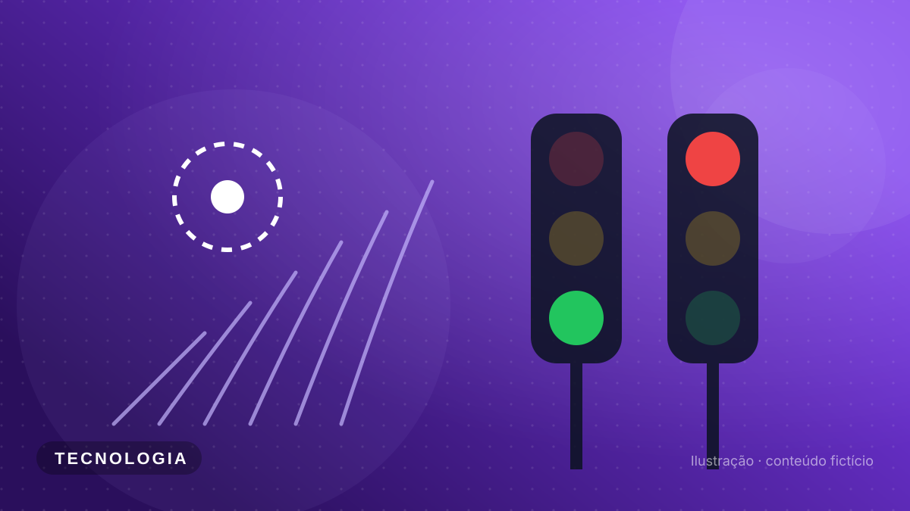

Curitiba testa semáforos com inteligência artificial em 40 cruzamentos
Projeto-piloto promete reduzir em até 20% o tempo parado no trânsito nos horários de pico.

Tamanho do texto:
Carregando o texto da notícia...
Pulso Cast · resumo em áudio
Ouça as principais notícias da semana em pouco mais de um minuto (voz sintética).
Esta notícia é fictícia e foi escrita para o projeto acadêmico da disciplina Desenvolvimento Front-End para Web.